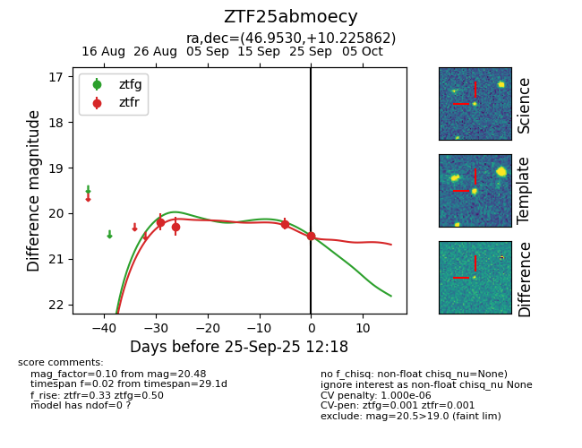
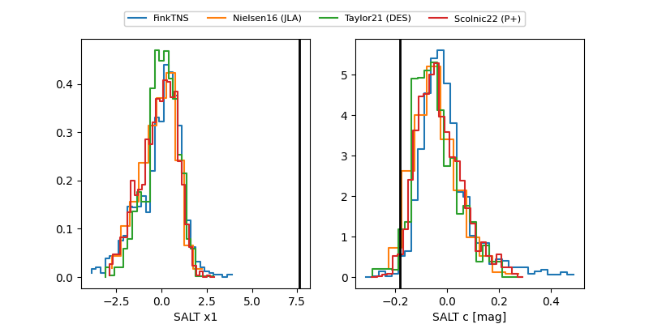

FINK: ZTF25abmoecy
Lasair: ZTF25abmoecy
ALeRCE: ZTF25abmoecy
ZTF25abmoecy (ztf,fink)
equatorial (ra, dec) = (46.9530,+10.22586)
galactic (l, b) = (169.0991,-40.11791)


last ztfg=20.49, ztfr=20.48
1 ztfg, 4 ztfr detections